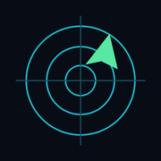

Actualizando imágenes…
El radar muestra ecos de precipitación donde la fuente tiene cobertura. Un mapa sin colores no permite confirmar por sí solo que no esté lloviendo.
Weather data by RainViewer · imágenes de los últimos 120 minutos
La hora corresponde a la composición de la imagen. La máscara de cobertura es orientativa; puede haber interrupciones de radares individuales.
Radio desde el centro · millas náuticas
La ubicación y los ajustes quedan guardados en este iPad.
Una pantalla de tráfico aéreo hecha para Juan, inspirada en la disposición del radar de escritorio.
Tráfico real: adsb.lol · ODbL 1.0. Respaldo: adsb.fi, uso personal.Mapa: Esri, Maxar y colaboradores.Precipitaciones: RainViewer, última imagen disponible; cobertura variable.Aeródromos de Argentina y Uruguay: OurAirports; centro SADF según ANAC.Viento y condiciones: METAR del Aviation Weather Center / NOAA-NWS.Fotografías: Planespotters.net, con crédito del fotógrafo.
Las posiciones con más de 15 segundos se muestran en ámbar. A los 60 segundos se retiran. La cobertura puede omitir aviones.
En Safari: Compartir → Agregar a inicio para usarla como una app a pantalla completa. Usá el iPad horizontal.
Versión independiente para uso informativo. No es el software oficial de Sporty’s ni un instrumento de navegación.

Agregala a la pantalla de inicio para abrir el radar como una app.
Después abrila desde su ícono y usá el iPad horizontal.
Necesita internet para mostrar tráfico, mapas y meteorología. Se instala desde Safari.
No hay un METAR disponible todavía.
Viento y ráfagas en nudos · dirección desde la que sopla · QNH en hPa. Es la observación del aeródromo indicado, no una medición continua.
Fuente: Aviation Weather Center / NOAA-NWS.